CAF - Confederação Africana de Futebol
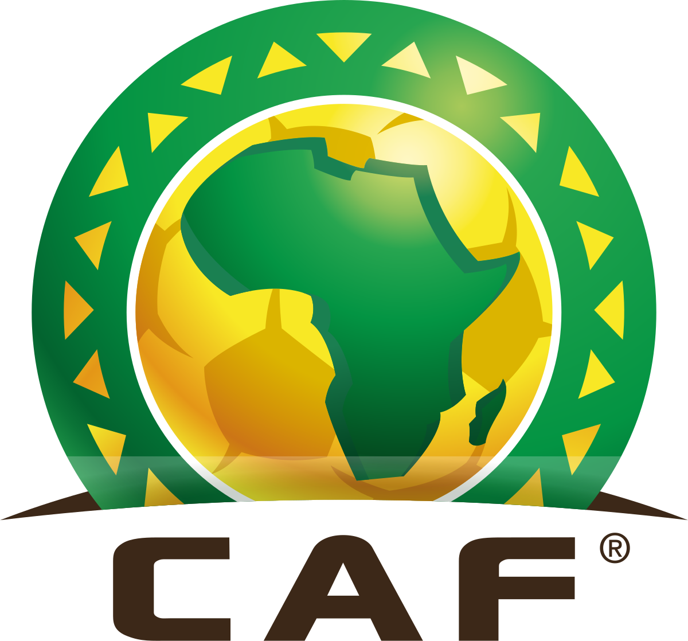A CAF é a entidade que representa e administra o futebol internacional na África. Ela organiza os torneios continentais entre clubes e seleções, como o Campeonato Africano das Nações (CAN) e o Campeonato das Nações Africanas (CHAN).
.
.
Zona 1: (Norte) presidida pela (UNAF) - 5
Federação Argelina de Futebol (FAF)
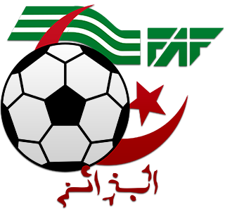Clubes da Argélia:
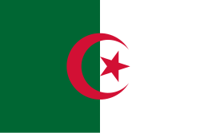Federação Egípcia de Futebol (EFA)
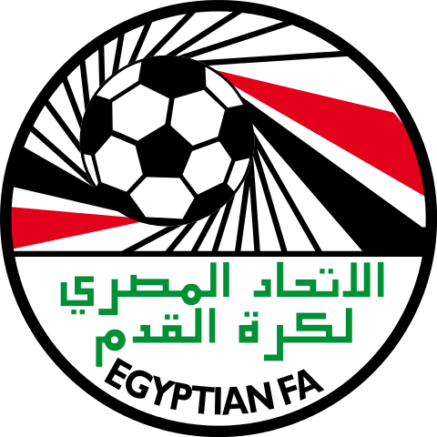Clubes do Egito:
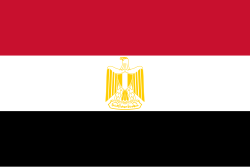Federação Líbia de Futebol (LFF)
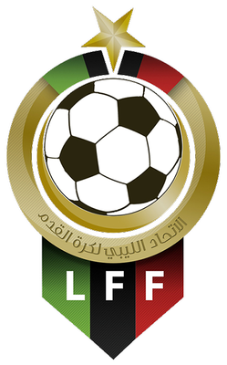Clubes da Líbia:
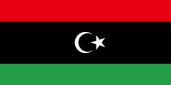
Clubes do Marrocos:

Federação Tunisiana de Futebol (FTF)
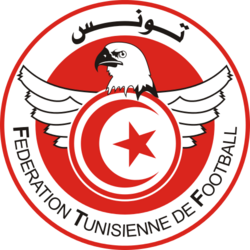Clubes da Tunísia:
.
Zona 2: (Oeste A) presidida pela (WAFU-UFOA) - 9
Federação Cabo-verdiana de Futebol (FCF)
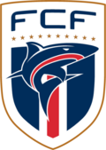Clubes do Cabo Verde:
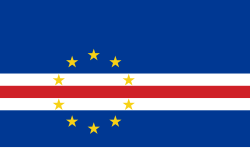Associação de Futebol da Gâmbia (GFA)
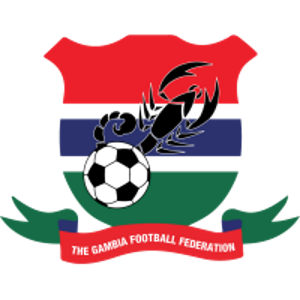Clubes da Gâmbia:

Federação de Futebol da Guiné (FGF)
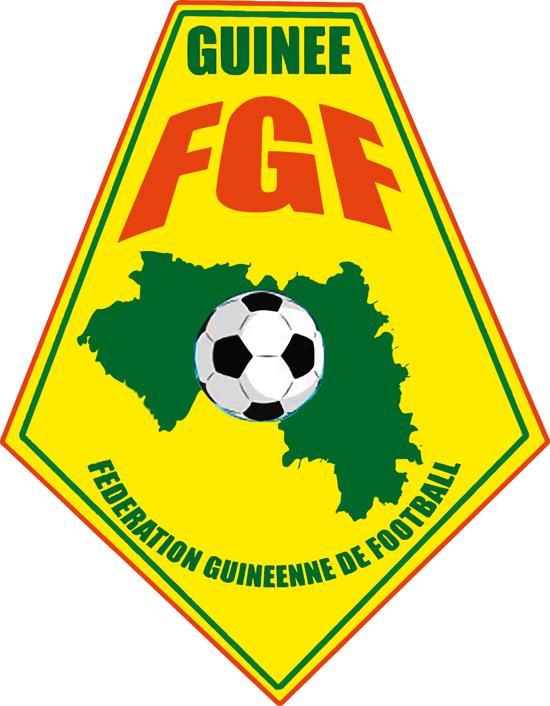Clubes da Guiné:
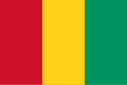Federação de Futebol da Guiné-Bissau (FFGB)
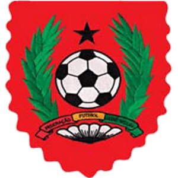Clubes da Guiné-Bissau:
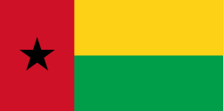Associação de Futebol da Libéria (LFA)
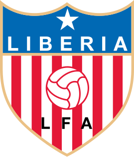Clubes da Libéria:

Federação Maliana de Futebol (FMF)
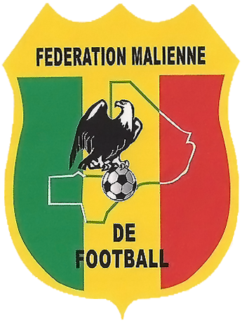Clubes do Mali:

Federação de Futebol da República Islâmica da Mauritânia (FFRIM)
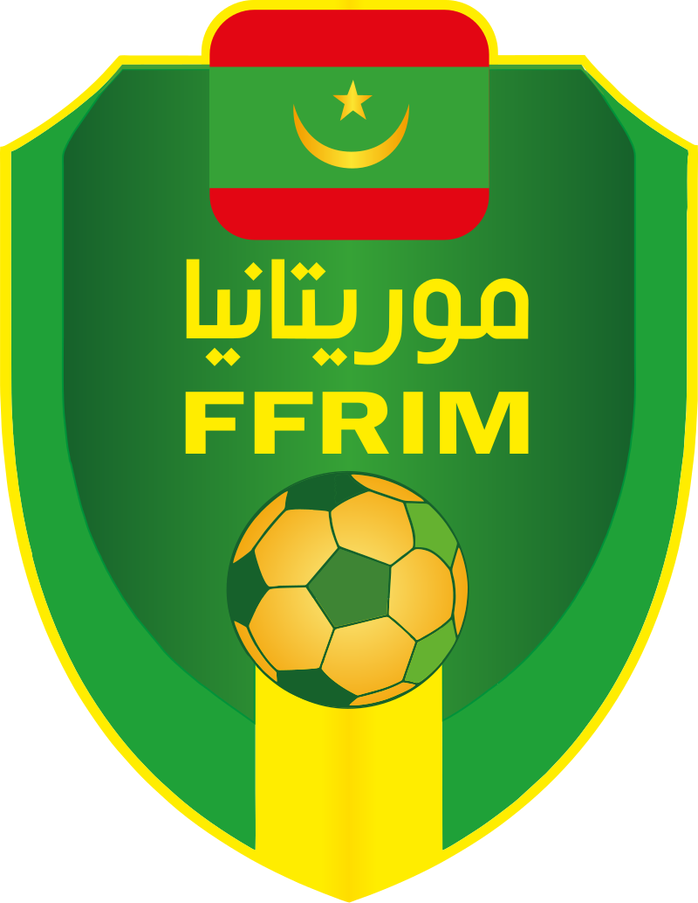Clubes da Mauritânia:
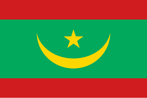Federação Senegalesa de Futebol (FSF)
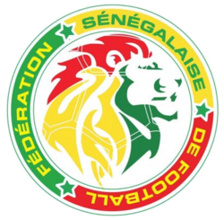Clubes do Senegal:
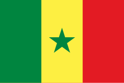Associação de Futebol de Serra Leoa (SLAFA)
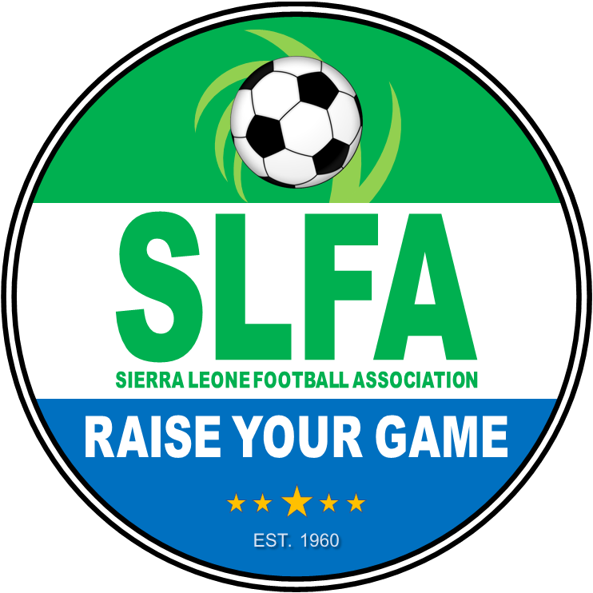Clubes do Serra Leoa:
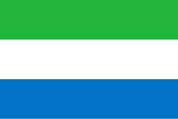
.
Zona 3: (Oeste B) presidida pela (WAFU-UFOA) - 7
Federação Beninense de Futebol (FBF)
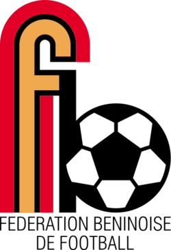Clubes do Benim:
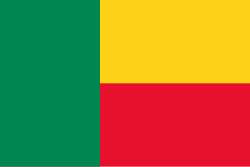Federação Burquinense de Futebol (FBF)
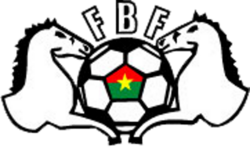Clubes do Burquina Faso:
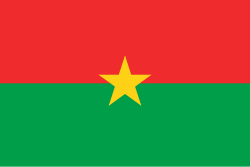Federação Marfinense de Futebol (FMF)
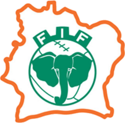Clubes da Costa do Marfim:
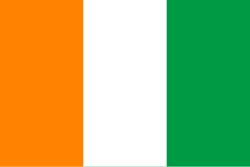
Clubes da Gana:
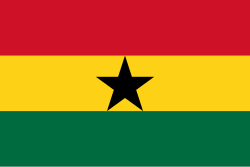Federação Nigerina de Futebol (FENIFOOT)
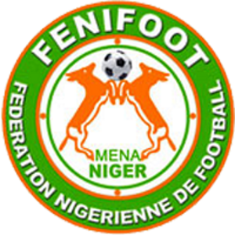Clubes do Níger:
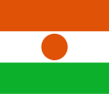
Clubes da Nigéria:
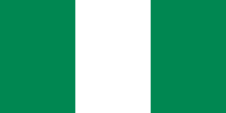
Clubes do Togo:
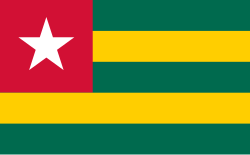
.
Zona 4: (Central) presidida pela (UNIFFAC) - 8
Federação Camaronesa de Futebol (FECAFOOT)
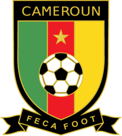Clubes do Camarões:
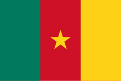Federação Chadiana de Futebol (FTF)
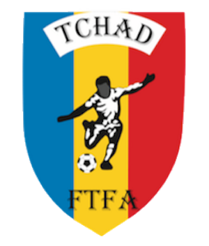Clubes do Chade :
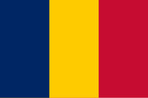Federação Congolesa de Futebol (FECOFOOT)
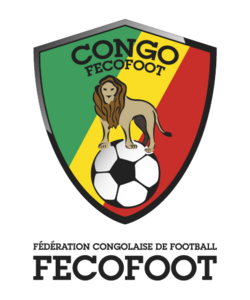Clubes da República do Congo:
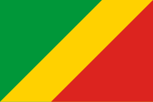Federação Gabonesa de Futebol (FEGAFOOT)
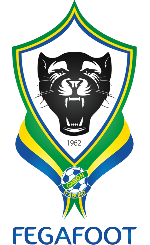Clubes do Gabão :
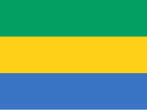Federação Guinéu-Equatoriana de Futebol (FEGUIFUT)
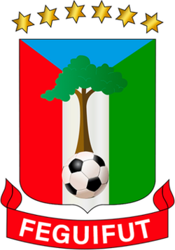Clubes da Guiné Equatorial:
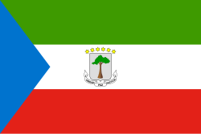Federação Centro-Africana de Futebol (CAR)
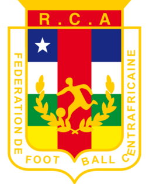Clubes da República Centro-Africana:

Associação Congolesa de Futebol (FECOFA)
Clubes da RD Congo:
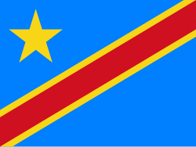Federação Santomense de Futebol (FSF)
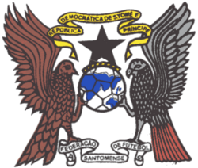Clubes do São Tomé e Príncipe:
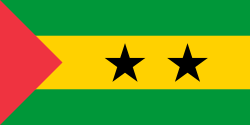
.
Zona 5: (Centro-leste) presidida pela (CECAFA) - 12
Federação de Futebol do Burundi (FFB)
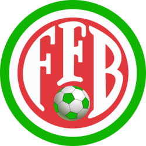Clubes do Burundi:
Federação Djibutiana de Futebol (FDF)
Clubes do Djibuti:
Federação Nacional de Futebol da Eritreia (ENFF)
Clubes da Eritreia:

Federação Etíope de Futebol (EFF)
Clubes da Etiópia:
Federação Queniana de Futebol (KFF)
Clubes do Quênia:
Federação Ruandesa de Futebol (FERWAFA)
Clubes da Ruanda:
Federação Somali de Futebol (SFF)
Clubes da Somália :
Associação de Futebol do Sudão (AFS)
Clubes do Sudão:
Associação de Futebol do Sudão do Sul (SSFA)
Clubes do Sudão do Sul:

Clubes da Tanzânia:
Federação das Associações de Futebol de Uganda (FUFA)
Clubes da Uganda:
Associação de Futebol de Zanzibar (ZFA)
Clubes do Zanzibar:
.
Zona 6: (Sul) presidida pela (COSAFA) - 14
Associação Sul-Africana de Futebol (SAFA)
Clubes da África do Sul:
Federação Angolana de Futebol (FAF)
Clubes da Angola:
Associação de Futebol de Botsuana (BFA)
Clubes da Botsuana:
Federação de Futebol de Comores (FCF)
Clubes de Comores:
Associação de Futebol do Lesoto (LEFA)
Clubes do Lesoto:
Federação Malgaxe de Futebol (FMF)
Clubes de Madagáscar:

Clubes do Malawi:
Associação de Futebol das Ilhas Maurício (MFA)
Clubes das Ilhas Maurício:
Federação Moçambicana de Futebol (FMF)
Clubes de Moçambique:
Associação de Futebol da Namíbia (NFA)
Clubes da Namíbia:
Federação de Futebol das Seychelles (SFF)
Clubes do Seychelles: